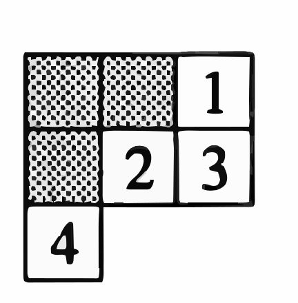

The link of paper: https://arxiv.org/abs/1710.05214
\( F_\pi(r, c) = F(\pi_c^{-1}(r), c) \)
Row sort: For \( F \in F(\lambda, z) \), we define the row-sorting of \( F \), denoted \( \text{rowsort}(F) \), to be the filling that arises from \( F \) by reordering the values within the rows so that they increase weakly.
Let \( \lambda = (\lambda_1, \dots, \lambda_k) \) be a partition, and \( \zeta = (\zeta_1, \dots, \zeta_{\lambda_1}) \) its conjugate partition.
Let \( C(\lambda) \) be the group of sequences of permutations \( \underline{\pi} = (\pi_1, \dots , \pi_{\lambda_1} ) \), where each \( \pi_i \in S_{\zeta_i} \).
We define the rearrangement subset of \( C(\lambda) \) associated to \( F, S \in F(\lambda, z) \) to be the set:
\[ C_{F,S}(\lambda) = \{ \underline{\pi} \in C(\lambda) \mid F_{\underline{\pi}} \text{ and } S \text{ have the same row content} \}. \]Definition 3.1.1. Let \( F, S \in F(\lambda, z) \). We define the rearrangement coefficient associated to these fillings to be:
\[ \mathcal{R}_{F,S} := \sum_{\pi \in C_{F,S}(\lambda)} \text{sgn}(\underline{\pi}) \]Lemma 3.1.3. Let \( F, T, S \in F(\lambda, z) \). Let \( \sigma, \gamma, \sigma', \gamma' \) be fixed elements of \( C(\lambda) \). Suppose that for all \( \pi \in C_{T,S}(\lambda) \), we have \( \sigma \circ \pi \circ \gamma \in C_{F,S}(\lambda) \). Further, suppose for all \( \pi' \in C_{F,S}(\lambda) \), we have \( \sigma' \circ \pi' \circ \gamma' \in C_{T,S}(\lambda) \). Then:
\[ \mathcal{R}_{F,S} = \text{sgn}(\sigma) \cdot \text{sgn}(\gamma) \cdot \mathcal{R}_{T,S} = \text{sgn}(\sigma') \cdot \text{sgn}(\gamma') \cdot \mathcal{R}_{T,S}. \]Lemma 3.1.5. Let \( T \in T(\lambda, z) \) and \( \pi \in C(\lambda) \) such that \( \pi \neq (\text{id}, \ldots, \text{id}) \). If \( S = \text{rowsort}(T_\pi) \), then \( S \succ \text{sort}(T) \).
\[ D_{i_1, \dots, i_p} = \det \begin{bmatrix} Z_{1,i_1} & \dots & Z_{1,i_p} \\ \vdots & \ddots & \vdots \\ Z_{p,i_1} & \dots & Z_{p,i_p} \end{bmatrix} \in R[Z]. \]For \( F \in F(\lambda, z) \), set:
\[ D_F = \prod_{j=1}^{\lambda_1} D_{F(1,j), F(2,j), \dots, F(\zeta_j,j)}. \]Here \( F(i, j) \) simply means the \( (i, j) \)-coordinate of the filling \( F \).
\(\textbf{Exercise 6.19*}\) Much of the story about Young diagrams and representations of symmetric and general linear groups can be generalized to \textit{skew Young diagrams}, which are the differences of two Young diagrams. If \( \lambda \) and \( \mu \) are partitions with \( \mu_i \leq \lambda_i \) for all \( i \), \( \lambda / \mu \) denotes the complement of the Young diagram for \( \mu \) in that of \( \lambda \). For example, if \( \lambda = (3, 3, 1) \) and \( \mu = (2, 1) \), \( \lambda / \mu \) is the numbered part.

\(\textbf{Definition.}\) A bialgebra is a vector space \( B \) over a field \( K \), equipped with both an algebra structure and a coalgebra structure such that the operations are compatible. The \(\textbf{comultiplication}\) is a linear map: \[ \Delta: B \to B \otimes B \] satisfying the following properties:
\(\textbf{Compatibility Conditions in a Bialgebra:}\) In a bialgebra, the comultiplication \( \Delta \) and counit \( \epsilon \) must be algebra homomorphisms: - **Compatibility with Multiplication**: \[ \Delta(xy) = \Delta(x) \Delta(y), \quad \forall x, y \in B, \] where \( xy \) denotes the product in the algebra \( B \). - **Compatibility with Unit**: \[ \Delta(1_B) = 1_B \otimes 1_B, \] where \( 1_B \) is the unit element in \( B \). \(\textbf{Remark:}\) The dual space \( B^* \) of a finite-dimensional bialgebra \( B \) also forms a bialgebra, reflecting the self-dual nature of the structure.